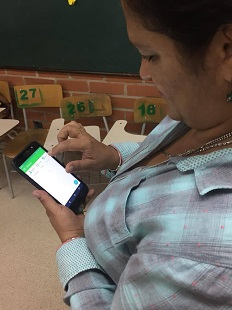
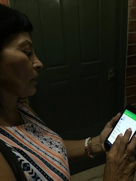
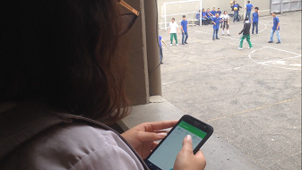

Fotografías
Uso del aplicativo
- 
Lina Valencia
Docente de Lengua Castellana

Ana Sofía Rojas
Estudiante de grado once
- 
Adriana Sánchez
Docente de Ciencias Sociales
- 

Elisa Fonnegra Tarazona
Estudiante de grado once
Acerca
Valores Corporativos
Se desarrollará un aplicativo móvil en el cual a los estudiantes del grado décimo y undécimo de la Institución Educativa Concejo de Medellín, pertenecientes a la jornada de la mañana, se les sea permitido administrar de una manera sencilla y evidente el registro del Servicio Social Estudiantil Obligatorio, asimismo se encontrará una plantilla que les posibilite realizar el registro y verificación de horas por parte de los alumnos y docentes, además de efectuar emisiones al ente encargado de su aprobación.
Alcance
Se desarrollará un aplicativo móvil en el cual a los estudiantes del grado décimo y undécimo de la Institución Educativa Concejo de Medellín, pertenecientes a la jornada de la mañana, se les sea permitido administrar de una manera sencilla y evidente el registro del Servicio Social Estudiantil Obligatorio, asimismo se encontrará una plantilla que les posibilite realizar el registro y verificación de horas por parte de los alumnos y docentes, además de efectuar emisiones al ente encargado de su aprobación.
Misión
Servir como herramienta de optimización en cuanto a la gestión y papeleo del formato de alfabetización, a los estudiantes del grado décimo y undécimo de la Institución Educativa Concejo de Medellín, mediante un aplicativo móvil que permita administrar de una manera sencilla y evidente el registro del Servicio Social Estudiantil Obligatorio.
Visión
Para el año 2019 se pretende evidenciar el uso del aplicativo móvil a nivel institucional, en la sede principal y en ambas jornadas, además de dar inicio a la implementación de esta herramienta en otras instituciones, atendiendo así a las necesidades de los estudiantes y realizando modificaciones que impacten de manera beneficiosa a la misma.
Desarrolladores
El equipo de Alf -App se ha comprometido a lo largo del desarrollo de este aplicativo, su resilencia, responsabilidad y disciplina nos la llevado a cumplir las metas y objetivos que se fueron encomendados. El trabajo en equipo es una condición que implica trabajar en cooperación con otros de una manera armónica, coordinada y enfocada, aprovechando las fortalezas de cada cual y potenciándolas a favor de todos. No se han generado trabajos o logros independientes; todos adquirimos un ambiente laboral de enriquecimiento personal, generando grandes lazos y amistades.
Integrantes:
Manuela Botero Garcés
Documentadora -Tester
Estudiante de la Institución Educativa Concejo De Medellín, y participante de la media técnica de Desarrollo de Software promocionada por Politécnico Jaime Isaza Cadavid y la Alcaldía de Medellín.
Miguel Ángel Correa Manrique
Gerente -Tester
Estudiante de la Institución Educativa Concejo De Medellín, y participante de la media técnica de Desarrollo de Software promocionada por Politécnico Jaime Isaza Cadavid y la Alcaldía de Medellín.
Leidy Stephania Castaño Gómez
Programadora -Tester
Estudiante de la Institución Educativa Concejo De Medellín, y participante de la media técnica de Desarrollo de Software promocionada por Politécnico Jaime Isaza Cadavid y la Alcaldía de Medellín.
Resumen
- Español
-
En la Institución Educativa Concejo de Medellín, media técnica de programación, se creó una aplicación, utilizando el lenguaje de “Java”, cuyo objetivo se refleja en la organización de los registros del Servicio Social Estudiantil Obligatorio y en la optimización del tiempo para diligenciarlo, dirigido a los estudiantes del grado 10 y 11. En esta aplicación se encontrará un inicio de sesión, con 3 opciones; estudiante, docente y administrador, dándose éste se mostrará en pantalla un menú diferente para cada tipo de inicio, las alternativas mostradas dependerán de las funciones, para el alumno y docente se les otorgará un historial para ver las horas registradas efectivamente y las horas confirmadas respectivamente, el estudiante podrá hacer un envío de las horas al coordinador o a su correo al finalizar las mismas, y el administrador manejará los docentes habilitados para la confirmación de horas. El modelo de ciclo de vida utilizado para desarrollar dicha herramienta es en cascada, debido a componentes como la cantidad de recursos mínimos para la implementación, documentación producida en cada etapa del desarrollo, fácil comprensión del producto a diseñar y pruebas para la verificación del correcto funcionamiento del software, haciendo de este un oportuno modelo de adaptación al trabajo en proceso. Se implementó la metodología RUP ya que permite adaptar el proceso con las necesidades del cliente llevando un control de cambio a través de la validación de usuarios y el cronograma de actividades.
- Inglés
-
In the Educational Institution Council of Medellin , programming media technical, it was created an application, using java language, which objective is reflected in the register organization of the Compulsory Student Social Service and on the time organization to fiil in it, it is addressed to the eleven and ten’s grade. The application is counting with a sign in with 3 options; student, professor and administrator, when is given one of them, it will show on screen a different menu to each sign in type, the alternatives showed depend of the functions, for the student and professor will have granted a history to see the hours registered effectively and the hours confirmed respectively, the student will be able to send the hours to his coordinator or to his email by the time he finished it, the administrator will manage the enabled professors to confirm the hours. The model used to develop such tool is named, waterfall model, thanks to the components such as the amount of minimum resources to the implementation, the documentation produced in each phase of development , easy product comprehension to design and verification tests for the correct software functionality. It was implemented the RUP methodology because of it allows the adaptation of the costumer necessities carrying a change control trough the user validation and the activity chronogram.
Objetivos
Objetivo General:
Desarrollar un aplicativo móvil en el cual a los estudiantes del grado décimo y undécimo de la Institución Educativa Concejo de Medellín se les sea permitido administrar de una manera sencilla y evidente el registro del Servicio Social Estudiantil Obligatorio.
Objetivos Específicos:
- Analizar las necesidades que los estudiantes, docentes y directivas presentan a la hora de iniciar el proceso del Servicio Social Estudiantil Obligatorio que obstruyen la fluidez de información y/o acciones en el mismo.
- Diseñar un aplicativo móvil compuesto por las diferentes funcionalidades que se requieren por parte de los usuarios para realizar el desarrollo habitual del Servicio Social Estudiantil Obligatorio.
- Implementar los conocimientos adquiridos sobre las necesidades analizadas que posibilitan una gestión, administración y organización evidente para el desarrollo del aplicativo a través del lenguaje de programación java, acuñando una metodología de programación orientada objetos.
- Comprobar el afianzamiento de la optimización referente al tiempo que es designado al inicio, durante y al finalizar el proceso, haciendo uso del aplicativo móvil.
Contáctanos
Estamos interesados en las opiniones y dudas de nuestros usuarios, nos encontramos en una búsqueda constante de la mejora de nuestros servicios, ¡déjanos tu mensaje!